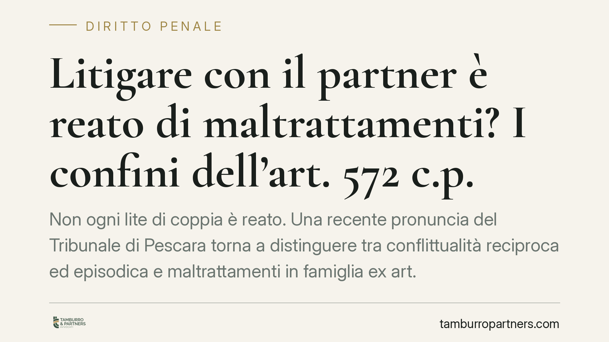
Litigare con il partner è reato di maltrattamenti? I confini dell'art. 572 c.p.
Non ogni lite di coppia è reato. Una recente pronuncia del Tribunale di Pescara torna a distinguere tra conflittualità reciproca ed episodica e maltrattamenti in famiglia ex art. 5…
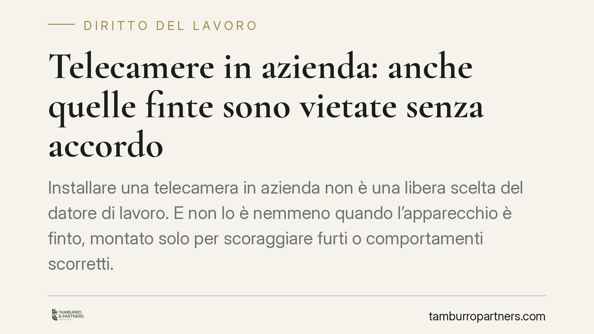
Telecamere in azienda: anche quelle finte sono vietate senza accordo
Installare una telecamera in azienda non è una libera scelta del datore di lavoro. E non lo è nemmeno quando l'apparecchio è finto, montato solo per scoraggiare furti o comportamen…
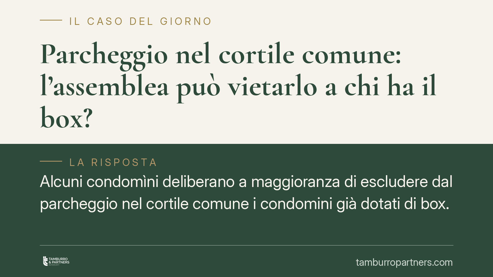
Parcheggio nel cortile comune: l'assemblea può vietarlo a chi ha il box?
Alcuni condomìni deliberano a maggioranza di escludere dal parcheggio nel cortile comune i condomini già dotati di box. Una scelta che appare logica ma che si scontra con il princi…
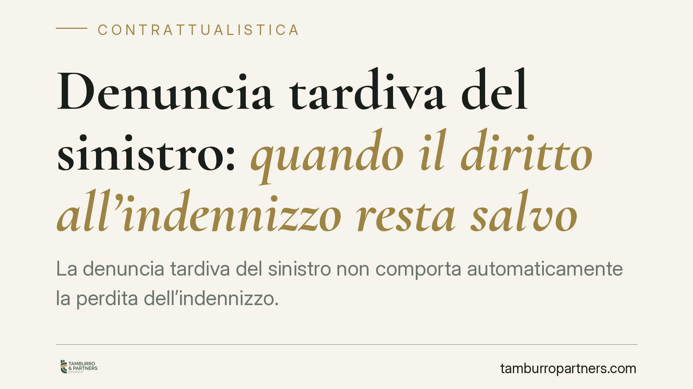
Denuncia tardiva del sinistro: quando il diritto all'indennizzo resta salvo
La denuncia tardiva del sinistro non comporta automaticamente la perdita dell'indennizzo. La giurisprudenza civile distingue tra dolo e semplice colpa dell'assicurato: solo l'inade…
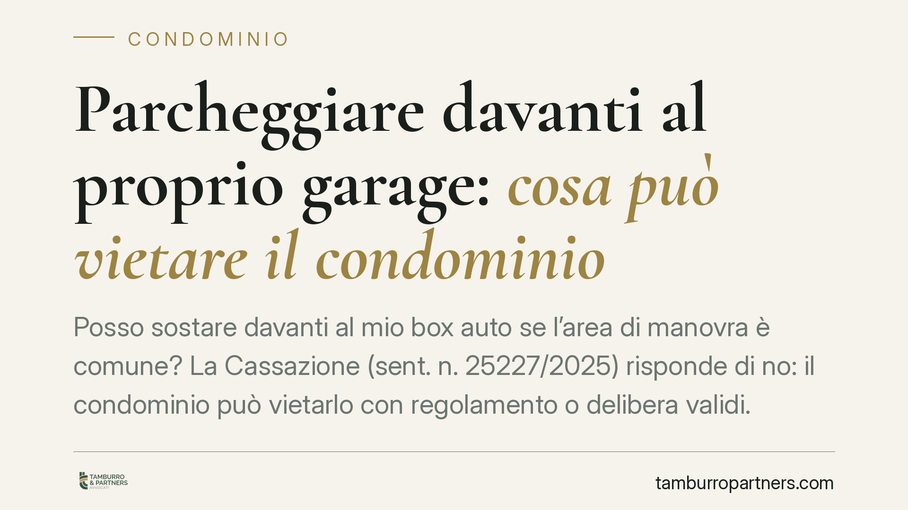
Parcheggiare davanti al proprio garage: cosa può vietare il condominio
Posso sostare davanti al mio box auto se l'area di manovra è comune? La Cassazione (sent. n. 25227/2025) risponde di no: il condominio può vietarlo con regolamento o delibera valid…
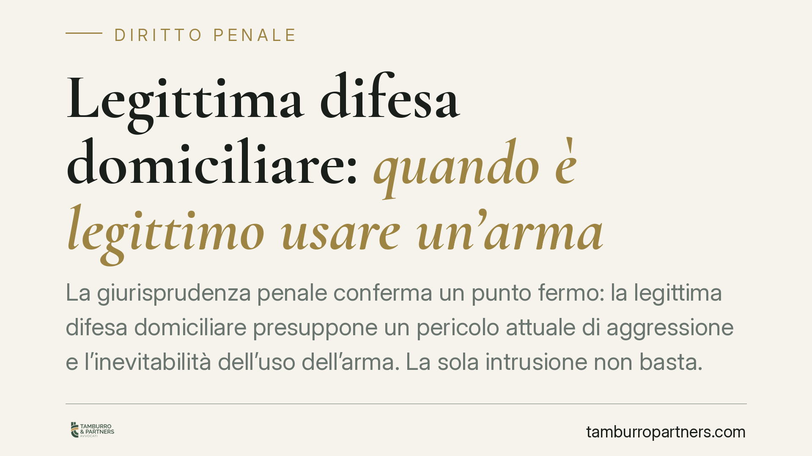
Legittima difesa domiciliare: quando è legittimo usare un'arma
La giurisprudenza penale conferma un punto fermo: la legittima difesa domiciliare presuppone un pericolo attuale di aggressione e l'inevitabilità dell'uso dell'arma. La sola intrus…
Mutuo cointestato tra ex coniugi: quando non spetta il regresso
Chi paga da solo le rate di un mutuo cointestato può chiederne il rimborso all'ex? Una recente pronuncia di merito ha escluso il regresso quando il cofirmatario non è proprietario …
Bilancio condominiale viziato: perché i 30 giorni sono decisivi
Un bilancio condominiale pieno di errori contabili non è un documento privo di effetti: resta valido se nessuno lo contesta nei termini. La distinzione tra delibera annullabile e n…
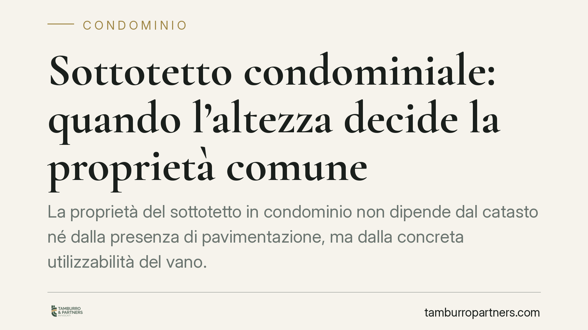
Sottotetto condominiale: quando l'altezza decide la proprietà comune
La proprietà del sottotetto in condominio non dipende dal catasto né dalla presenza di pavimentazione, ma dalla concreta utilizzabilità del vano. Un'altezza che consenta la mobilit…
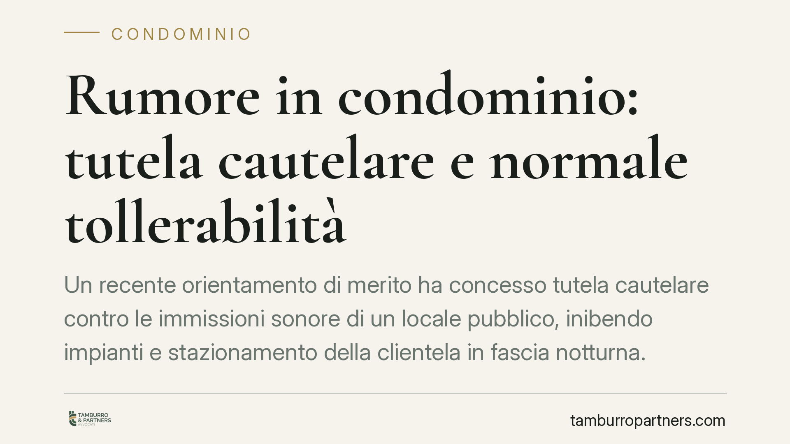
Rumore in condominio: tutela cautelare e normale tollerabilità
Un recente orientamento di merito ha concesso tutela cautelare contro le immissioni sonore di un locale pubblico, inibendo impianti e stazionamento della clientela in fascia nottur…
Cliente professionale su richiesta: la dichiarazione non è una confessione
La qualifica di «cliente professionale su richiesta» non libera la banca dagli obblighi informativi. La richiesta di chi vuole essere trattato come esperto è un giudizio di valore,…
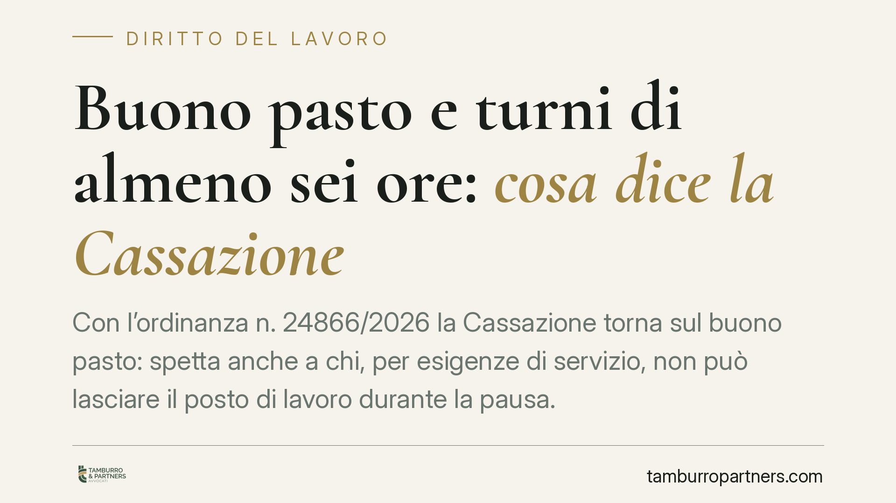
Buono pasto e turni di almeno sei ore: cosa dice la Cassazione
Con l'ordinanza n. 24866/2026 la Cassazione torna sul buono pasto: spetta anche a chi, per esigenze di servizio, non può lasciare il posto di lavoro durante la pausa. La Corte ne r…
Premi di produttività convertiti in welfare: il nodo della tassazione
Molti lavoratori possono scegliere di convertire il premio di produttività in beni e servizi di welfare aziendale. La questione fiscale è ricorrente: il trattamento agevolato vale …
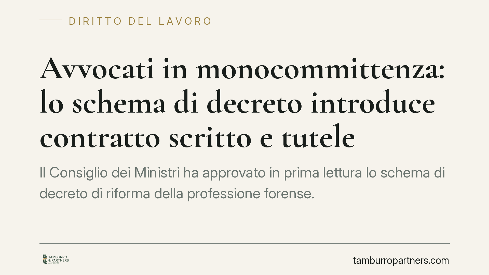
Avvocati in monocommittenza: lo schema di decreto introduce contratto scritto e tutele
Il Consiglio dei Ministri ha approvato in prima lettura lo schema di decreto di riforma della professione forense. Per la prima volta in modo organico vengono regolate la monocommi…
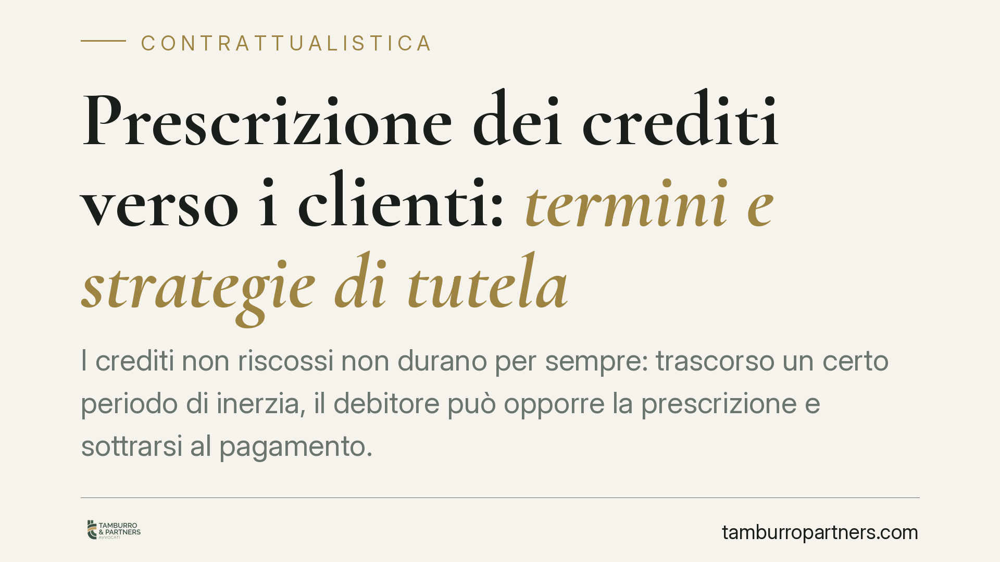
Prescrizione dei crediti verso i clienti: termini e strategie di tutela
I crediti non riscossi non durano per sempre: trascorso un certo periodo di inerzia, il debitore può opporre la prescrizione e sottrarsi al pagamento. I termini variano a seconda d…
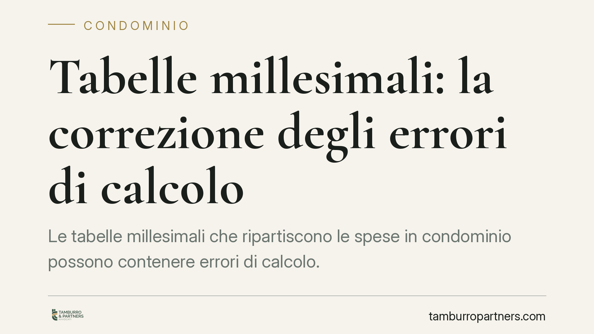
Tabelle millesimali: la correzione degli errori di calcolo
Le tabelle millesimali che ripartiscono le spese in condominio possono contenere errori di calcolo. La Cassazione, in linea con l'orientamento consolidato, ricorda che la loro appr…
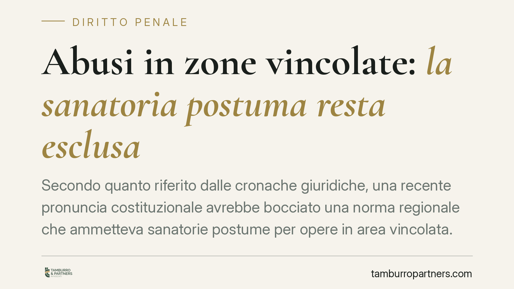
Abusi in zone vincolate: la sanatoria postuma resta esclusa
Secondo quanto riferito dalle cronache giuridiche, una recente pronuncia costituzionale avrebbe bocciato una norma regionale che ammetteva sanatorie postume per opere in area vinco…
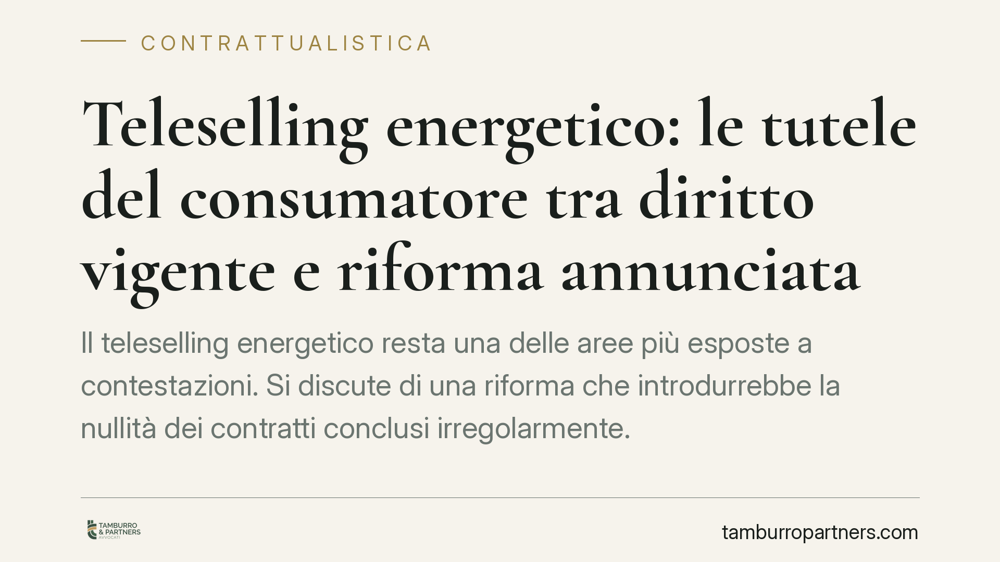
Teleselling energetico: le tutele del consumatore tra diritto vigente e riforma annunciata
Il teleselling energetico resta una delle aree più esposte a contestazioni. Si discute di una riforma che introdurrebbe la nullità dei contratti conclusi irregolarmente. Al momento…
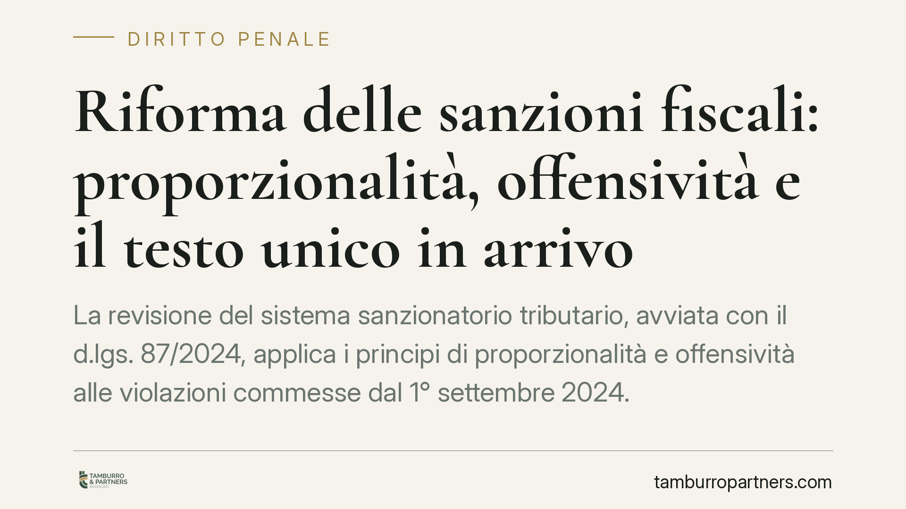
Riforma delle sanzioni fiscali: proporzionalità, offensività e il testo unico in arrivo
La revisione del sistema sanzionatorio tributario, avviata con il d.lgs. 87/2024, applica i principi di proporzionalità e offensività alle violazioni commesse dal 1° settembre 2024…
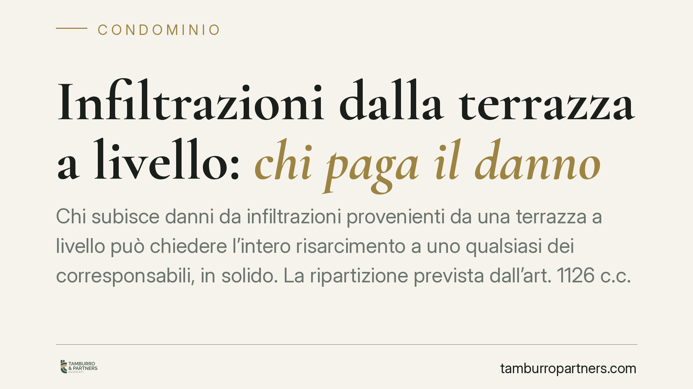
Infiltrazioni dalla terrazza a livello: chi paga il danno
Chi subisce danni da infiltrazioni provenienti da una terrazza a livello può chiedere l'intero risarcimento a uno qualsiasi dei corresponsabili, in solido. La ripartizione prevista…
Visita fiscale e licenziamento: quando il verbale INPS ambiguo non regge
Un recente orientamento della Sezione Lavoro della Cassazione torna sul licenziamento disciplinare fondato sull'assenza alla visita fiscale. Quando il verbale del medico INPS è amb…
Supplenti e ferie non godute: quando i periodi di sospensione riducono l'indennità
Per i docenti a tempo determinato il tema delle ferie non godute resta tra i più controversi. La questione ruota attorno a una distinzione: i periodi di sospensione delle lezioni (…
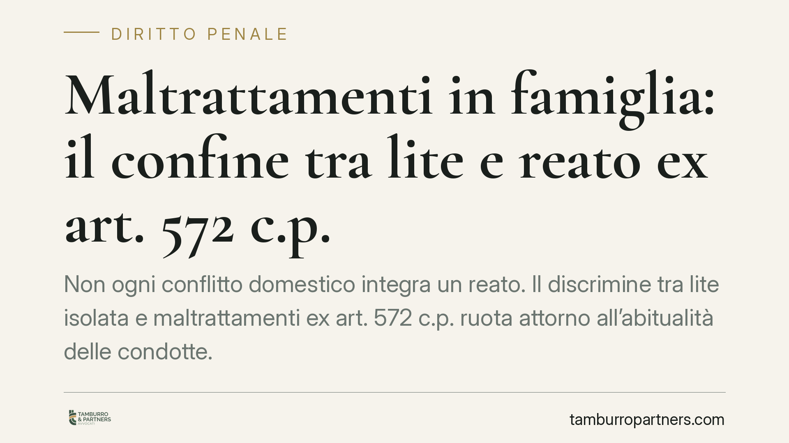
Maltrattamenti in famiglia: il confine tra lite e reato ex art. 572 c.p.
Non ogni conflitto domestico integra un reato. Il discrimine tra lite isolata e maltrattamenti ex art. 572 c.p. ruota attorno all'abitualità delle condotte. Due profili restano cen…
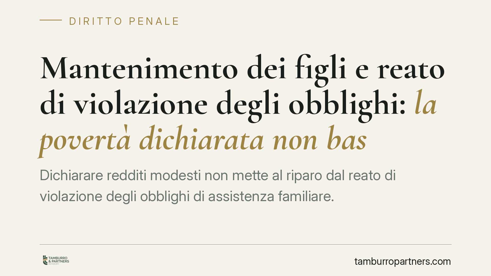
Mantenimento dei figli e reato di violazione degli obblighi: la povertà dichiarata non basta
Dichiarare redditi modesti non mette al riparo dal reato di violazione degli obblighi di assistenza familiare. La giurisprudenza penale distingue tra chi davvero non può pagare il …
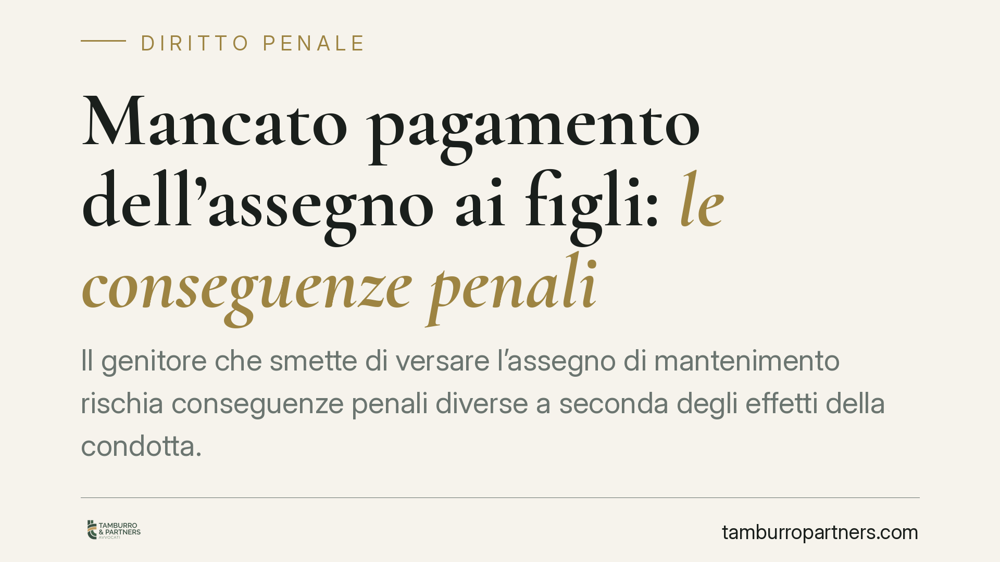
Mancato pagamento dell'assegno ai figli: le conseguenze penali
Il genitore che smette di versare l'assegno di mantenimento rischia conseguenze penali diverse a seconda degli effetti della condotta. Una recente pronuncia di merito torna sul pun…

Estorsione sul lavoro: anche la minaccia velata di licenziamento
La Seconda Sezione penale della Cassazione torna sul confine tra pressione contrattuale e reato: il datore che, sfruttando la crisi occupazionale, impone retribuzioni deteriori con…

Vendere casa per liquidità e poi ricomprarla: quando è nullo il contratto
Chi ha bisogno di liquidità talvolta vende casa impegnandosi a ricomprarla. Operazione lecita, ma a rischio: se nasconde un prestito garantito dall'immobile, il contratto è nullo p…

Assenza per emergenza familiare: quando il licenziamento è illegittimo
Il Tribunale di Benevento ha dichiarato illegittimo il licenziamento disciplinare di una lavoratrice assentatasi per assistere la figlia minore gravemente malata. Secondo i giudici…

Disoccupazione e mantenimento dei figli: quando non esonera dal reato
Perdere il lavoro non cancella l'obbligo di mantenere i figli. Una recente pronuncia della Corte d'Appello di Napoli ribadisce che solo l'impossibilità economica assoluta e incolpe…

Truffa con la voce clonata dall'IA: profili penali e difese
Le frodi realizzate con voci sintetiche generate dall'intelligenza artificiale non sono più scenari ipotetici. Un criminale clona la voce di un dirigente e ordina un bonifico urgen…